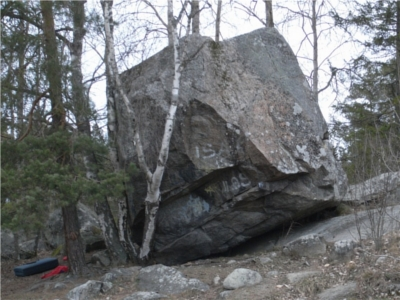

Kategori:Uppsala 
Ett block utvecklat av le Sydd. Ingen direkt utvecklingspotential i området men värt ett besök om inte annat för att testa Neftertiti ss.
Ligger längst ner på gottsundagipen, lättast att komma hit med cykel.
Copyright (C) Permission is granted to copy, distribute and/or modify this document under the terms of the GNU Free Documentation License, Version 1.3